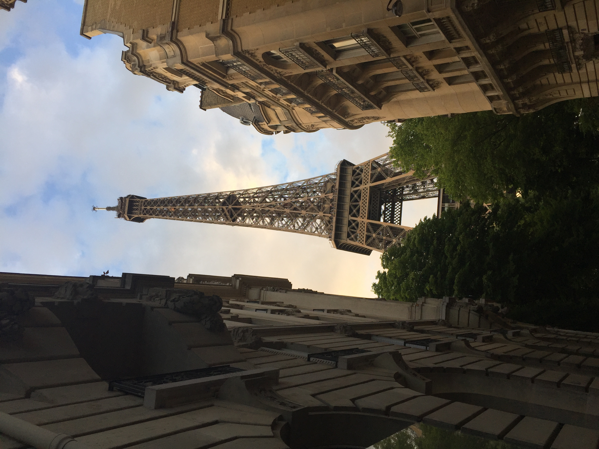
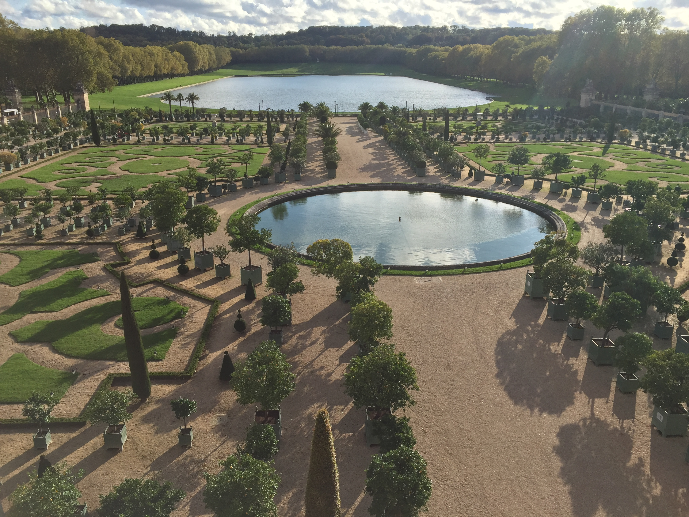

About
 Ryan is a Boston College computer science and finance major originally from Baltimore, MD. Thanks to his academic and professional experiences,
he has acquired a wide range of skills in full stack engineering and machine learning, and will be joining InterSystems in Boston full-time as a
solutions development engineer. Some of Ryan's hobbies include food, traveling, sci-fi novels, and Scorsese movies.
Ryan is a Boston College computer science and finance major originally from Baltimore, MD. Thanks to his academic and professional experiences,
he has acquired a wide range of skills in full stack engineering and machine learning, and will be joining InterSystems in Boston full-time as a
solutions development engineer. Some of Ryan's hobbies include food, traveling, sci-fi novels, and Scorsese movies.
Academic & Professional Experiences
Boston College is a world-renowned Catholic university in Boston, MA. Aside from studying computer science and finance, Ryan has also participated in 4Boston and the BC Investment Fund. A couple of his favorite activities are running by the Res and getting brunch at Cityside Tavern or Cafe Landwer.

InterSystems is an international, privately owned data management company pointed at the finance, healthcare, business, and government spaces. Ryan will be coming on board as a solutions development engineer at the Boston location.
The Boston College Investment Fund takes a bottum-up, low-risk approach to investing its capital, of which it has over $1 million. The Fund's portfolio has exposure to several industries, with technology and consumer discretionary being chief among them. Ryan has worked as a senior analyst covering the tech sector for all four of his years at BC.
Codementor is a crowdsourced platform for facilitating the bidding for and development of freelance coding projects. The cryptocurrency trading project is an example of Ryan's work as a mentor.

Gravyty offers machine learning products to fundraisers like nonprofits and higher education institutions in order to streamline the fundraising process. Ryan has spent two summers with the company, one as a full stack engineer and one as a machine learning engineer, and still remains close with many of his former coworkers there.

In the summer of 2018, Boston College hosted a research collaboration with the goal of developing an Alexa skill for the classroom. Ryan was honored to be a part of this project, and developed features for organizing students into groups and calling a random name from the Canvas roster.
Class Projects
Game of Risk Network ModelA Python application implementing the NetworkX library that accepts a data file to construct a dynamic, graph-based visualization of the Game of Risk. Players can battle each other through command line IO or play against the program's probabilistic model.
Cryptocurrency Trading AlgorithmA Python cryptocurrency trading client that utilizes a strategy based on exponential moving average.
Flow Network Object-Oriented DesignA Python program implementing the NetworkX library that offers utilities for constructing and visualizing a graph as well as calculating max flow.
Pocket MovieA project applying a recurrent neural network to generate movie scripts.
Travels
London

Amsterdam
Paris
 Rome
Venice

Zurich
Madrid
Seville
Stockholm